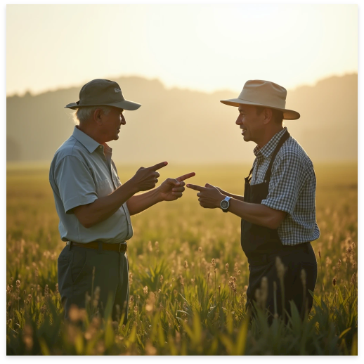

宮崎の土が育てた、本物の味。
もともとは農家の息子でして、父の背中を見て育ちました。でも若い頃は「農業なんて古い」と思っていて（笑）。一度県外のメーカーに就職したんですが、スーパーで宮崎産の野菜が安く叩かれているのを見て、悔しくて。「自分がやらなきゃ誰がやる」と思って戻ってきました。2008年に会社を立ち上げて、今年で17年目になります。
日照時間の長さと、水のきれいさですね。宮崎は全国でも有数の日照時間を誇る県で、それが農作物の甘みや旨みに直結している。ここで育ったものには、他の産地にはない力強さがある。私はそれを「宮崎の底力」と呼んでいます。うちの加工品は余計なものを足さない。素材
が良ければ、それだけで十分なんです。
契約農家さんが今は23軒あります。私たちは値段で買い叩くことは絶対にしない。農家さんが誇りを持って作れる値段で、長く付き合うことが大事。関係が続けば、「今年はこういう品種を試してみたい」「この時期に困っているからなんとかしてほしい」という話が自然と出てくる。そこから新しい商品が生まれることも多いんです。
